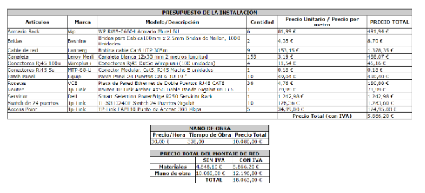
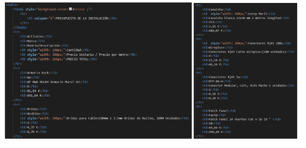

Creación del página Web
Para este reto tuvimos que crear una página web con todo lo que habiamos hecho en el proyecto y para empezar la creación de la página hicimos un menú con el que podemos navegar entre las distintas páginas y apartados del proyecto
Aqui se puede ver un video de como funciona el menú y unas imagenes del codigo útilizado:

Creación de formulario
En la lista de objetivos del reto nos pedian hacer un formulario con una serie de infraestructura concretas:
- Dades personals de l'usuari (nom, cognoms)
- Dades de contacte (telèfon, correu electrònic)
- Número d'ordinadors que el client vol incloure
- Si la connexió serà per cable, wi-fi o ambdues
- Número de sales que es faran servir a la instal·lació (un màxim de 10 sales)
- Text lliure de comentaris addicionals
- Qualsevol cosa que el client no hagi considerat
Para realizar el formulario usamos el elemento "form" junto al "label", "option"...
Aqui se puede ver un video de como funciona el formulario y unas imagenes del codigo útilizado:

Implementación del presupuesto
En la lista de objetivos también nos pedía implementar en la web uno de los presupuestos utilizados en la anterior fase, esta vez lo creamos utilizando un “table” y este sería el resultado de la página:
 